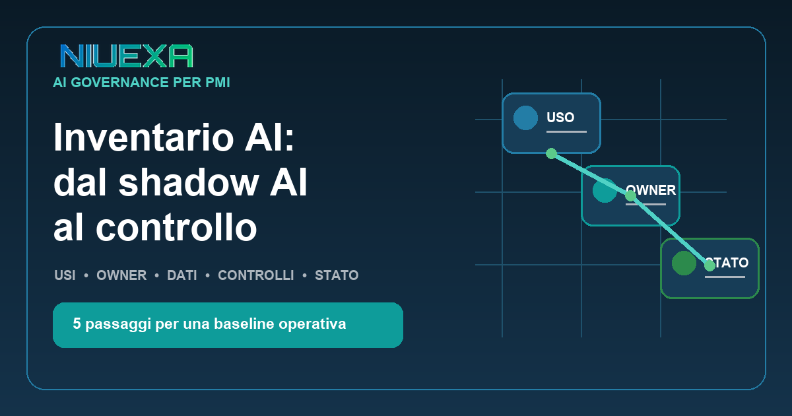
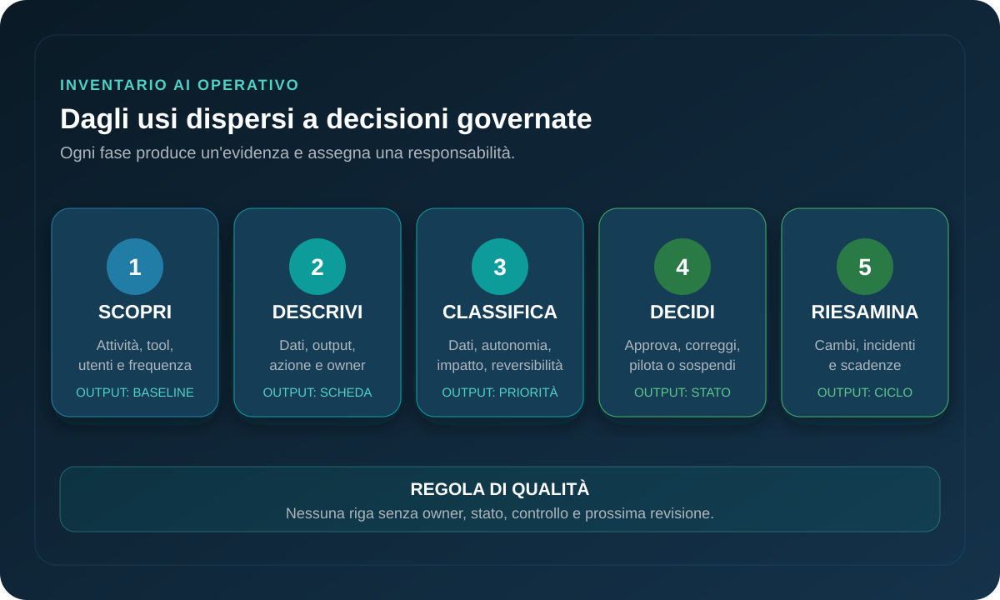

Risposta rapida: che cos’è un inventario AI aziendale?
Un inventario AI è un registro operativo degli strumenti, sistemi e workflow AI effettivamente usati in azienda. Per ogni uso collega scopo, processo, owner, utenti, dati, output, livello di autonomia, controlli e stato decisionale. Serve a distinguere una sperimentazione innocua da un’attività che può influire su clienti, dipendenti, denaro o continuità operativa.
Perché la sola lista degli strumenti non basta
Due persone possono usare lo stesso assistente generativo in modi molto diversi. Una prepara una bozza interna senza dati riservati; l’altra carica contratti, genera una risposta per un cliente e la invia senza revisione. Il nome del software è identico, ma processo, dati, destinatario e impatto cambiano completamente.
Per questo il censimento deve partire dall’uso nel workflow, non dal catalogo IT. Il NIST AI Risk Management Framework include tra gli esiti di governance la presenza di meccanismi per inventariare i sistemi AI in funzione delle priorità di rischio. Lo stesso framework collega governance, ruoli, monitoraggio e gestione lungo il ciclo di vita. Non impone a una PMI un unico modello di registro: indica però che visibilità e responsabilità sono prerequisiti della gestione.
Un inventario utile riduce tre zone grigie. La prima è il shadow AI: usi reali non ancora noti o approvati. La seconda è l’AI incorporata: funzioni intelligenti attivate dentro CRM, suite d’ufficio o software verticali e quindi dimenticate nel censimento. La terza è l’automazione indiretta: un output AI entra in una decisione tramite email, fogli o API anche se nessuno la chiama “sistema AI”.
La scheda minima: censire una decisione, non compilare un questionario
| Campo | Domanda operativa | Esempio |
|---|---|---|
| Uso e processo | Che lavoro cambia? | Classificazione ticket assistenza |
| Owner | Chi risponde dell’esito? | Responsabile customer service |
| Dati | Che cosa entra nel sistema? | Testo ticket e storico cliente |
| Output e destinatario | Che cosa produce e chi lo usa? | Categoria proposta all’operatore |
| Autonomia | Suggerisce o agisce? | Suggerimento con conferma umana |
| Controlli | Come si rileva e corregge l’errore? | Campione settimanale ed escalation |
| Stato | Qual è la decisione corrente? | Pilota approvato fino al 30/09 |
Aggiungi fornitore, integrazioni, versione o configurazione, data di revisione e criterio di uscita quando sono rilevanti. Evita invece campi che nessuno usa per decidere. Se una riga non permette di capire chi deve intervenire in caso di errore, il registro è ancora troppo descrittivo.
L’inventario non sostituisce privacy, sicurezza, procurement o valutazione legale. Funziona come indice comune: permette a queste funzioni di trovare i casi che richiedono un controllo più profondo e di evitare revisioni identiche per usi con impatti molto diversi.
Un metodo leggero in cinque passaggi

1. Scopri gli usi reali senza impostare una caccia al colpevole
Chiedi ai team quali attività svolgono con AI, non soltanto quali tool hanno installato. Parti da uno o due processi e usa una raccolta breve: attività, strumento, dati, output, destinatario e frequenza. Verifica poi con interviste, spese SaaS, integrazioni e log disponibili. Una comunicazione punitiva spinge gli usi nell’ombra; un percorso rapido di regolarizzazione porta informazioni migliori.
2. Descrivi il workflow e individua il punto di impatto
Traccia ingresso, trasformazione, revisione, azione e archiviazione. Chiedi dove l’output AI diventa operativo: quando viene inviato a un cliente, copiato nel CRM, usato per approvare una pratica o passato a un’altra automazione. Questo punto determina il controllo necessario più del modello impiegato.
3. Classifica con quattro domande proporzionate
Valuta dati, autonomia, impatto dell’errore e reversibilità. Dati sensibili o confidenziali aumentano l’attenzione. Un sistema che agisce richiede più controllo di uno che propone. Un errore che modifica un pagamento pesa più di una bozza interna. Una decisione facilmente annullabile è diversa da una comunicazione già inviata o da un’azione fisica.
4. Prendi una decisione esplicita e assegna l’owner
Ogni riga deve arrivare a uno stato: approvato, pilota con condizioni, da correggere o sospeso. Registra controlli, scadenza e responsabile. “In valutazione” senza data è un limbo. Per i casi utili ma incompleti, definisci la modifica minima necessaria: rimuovere dati, aggiungere revisione umana, limitare l’integrazione o creare un fallback.
5. Riesamina quando cambia il rischio, non solo a calendario
Una revisione periodica è utile, ma non basta. Riavvia il controllo se cambiano modello, fornitore, dati, utenti, integrazioni, livello di autonomia o destinatari. Collega il registro al processo di change management e alla gestione degli incidenti: una variazione materiale non deve vivere soltanto nella memoria del team.
Quattro decisioni possibili per ogni uso AI
| Stato | Quando usarlo | Evidenza minima |
|---|---|---|
| Approvato | Scopo, dati e controlli sono adeguati | Owner, perimetro, istruzioni e revisione |
| Pilota condizionato | Valore plausibile, rischio limitato e testabile | Campione, soglia, fallback e scadenza |
| Da correggere | L’uso è utile ma il controllo è insufficiente | Azione, responsabile e data di verifica |
| Sospeso | Dati, autonomia o impatto non sono accettabili | Motivo, alternativa sicura e criterio di riapertura |
Il catalogo approvato deve essere facile da consultare: quali strumenti usare, per quali attività, con quali dati e con quale revisione. Questa parte positiva è essenziale. Una policy che elenca soltanto divieti non offre ai team un modo rapido per lavorare bene e tende a ricreare lo shadow AI.
Collega inoltre inventario e competenze. La Commissione europea indica che le misure di AI literacy devono considerare conoscenze, esperienza, formazione e contesto d’uso, senza imporre un unico livello individuale. Il registro aiuta a rendere la formazione concreta: chi prepara bozze interne ha bisogno di competenze diverse da chi supervisiona un workflow che influenza clienti o decisioni operative.
Checklist per la prima baseline
- Il perimetro iniziale è un processo o una funzione, non “tutta l’azienda”.
- La raccolta chiede usi e attività, non soltanto nomi di software.
- Ogni uso ha un owner operativo e un destinatario dell’output.
- Dati, integrazioni e livello di autonomia sono espliciti.
- Il punto in cui l’output diventa azione è identificato.
- La decisione usa uno stato chiaro con data di revisione.
- I casi sospesi hanno un’alternativa sicura per non bloccare il lavoro.
- Il catalogo degli usi approvati è accessibile ai team.
- Cambi materiali e incidenti attivano una nuova revisione.
Fonti e perimetro
Il principio di inventariare i sistemi AI e collegare governance, responsabilità e monitoraggio è allineato al NIST AI Risk Management Framework Core, in particolare Govern 1.6. Il collegamento tra contesto d’uso e competenze si basa sulla pagina ufficiale della Commissione europea dedicata a AI talent, skills and literacy. Scheda, classificazione e workflow in cinque passaggi sono guida operativa Niuexa: non costituiscono parere legale, privacy o cybersecurity né una garanzia di conformità.
FAQ sull’inventario AI aziendale
Che cos’è un inventario AI aziendale?
È un registro operativo degli strumenti, sistemi e workflow AI effettivamente usati, con scopo, owner, dati, utenti, rischio, controlli e stato decisionale.
Come si scopre il shadow AI senza bloccare i team?
Con una raccolta breve e non punitiva per ruolo e processo, verificata con interviste, spese, integrazioni e log disponibili, offrendo un percorso rapido per regolarizzare gli usi utili.
Quali campi deve contenere il registro?
Almeno nome dell’uso, processo, scopo, owner, utenti, dati in ingresso, output e destinatari, fornitore, integrazioni, livello di autonomia, controlli, stato e data di revisione.
Ogni uso AI richiede lo stesso controllo?
No. La profondità del controllo dovrebbe essere proporzionata a dati, autonomia, impatto dell’errore e reversibilità della decisione.
Quanto tempo serve per una prima versione?
Una PMI può ottenere una baseline utile partendo da uno o due processi e aggiornandola in cicli brevi. L’obiettivo iniziale è rendere visibili gli usi prioritari, non censire tutto in modo perfetto.